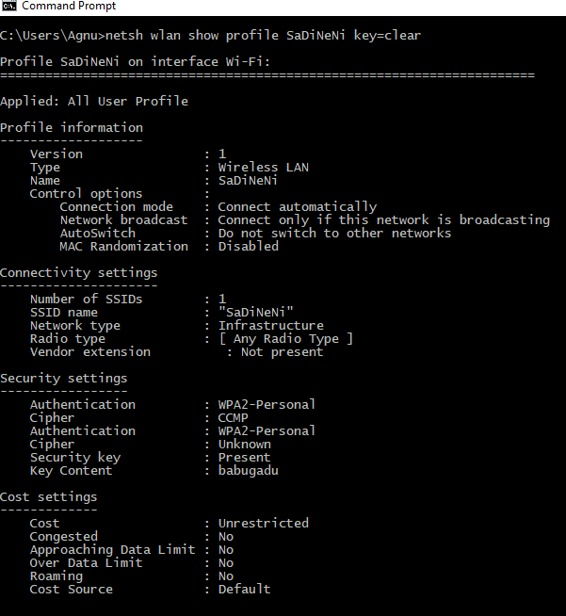
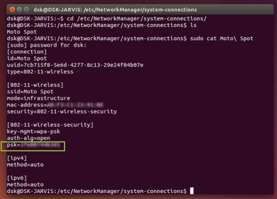

Windows
Command Prompt, also known as cmd.exe or cmd (after its executable file name) is a great tool for the people who love command interface rather than Graphical UI. There are a lot of features which are still not implemented in Graphical User Interface can be accessed via CMD. In this article, I am going to share how to find out the password of all connected devices using CMD.
Before going further, you should know one thing that whenever you connect to a Wi-Fi network and enter the password, Windows creates a WLAN profile of that Wi-Fi network. These WLAN profiles are stored in the computer alongside other required details of the Wi-Fi profile.
We can uncover these WLAN profiles later by simply using Windows CMD. You can find out all the connected networks and their passwords by using simple commands. These commands can also uncover the Wi-Fi passwords of the networks which are not connected at the moment but were connected before. So it works even when you are offline or when you are connected to any other networks.
NOTE: Following command will only be executed by administrator
1) Open command prompt and run it as administrator
2) Type “netsh wlan show profile” – It will show all profile of Wi-Fi which were earlier connected to the computer

2) Type this command without quotes “netsh wlan show profile SaDiNeNi key=clear”

Precaution which should be taken :
1)Type netsh wlan show profiles (It will show different wi-fi which were connected)
2)Type netsh wlan delete profile name=”ProfileName” (Delete the desired profile)
LINUX
To find the saved wifi password via command line, follow these steps: Login into Ubuntu and open up the “Terminal”” and enter these commands.
1) Type cd /etc/NetworkManager/system-connections/ – It contains profile of Wi-Fis
2) Type ls -a
Now you will get name of the wifi networks saved on your pc. Now enter the following command with the name of your wifi network you want to find the password. You can find your password at “psk”=”PASSWORD”.
3) sudo cat WIFI_SSID_Name

Precaution which should be taken :
1)sudo ls -l /etc/NetworkManager/system-connections/
To list all the files, after you have found the network that you want to delete, remove them with the command:
2) sudo rm /etc/NetworkManager/system-connections/NETWORK_NAME